Conhecendo o sistema
Nesta seção, apresentaremos como acessar o sistema e como funcionam os botões, listas, filtros de busca e seleções nas páginas do sistema.
Acesso ao sistema
Para acessar o sistema, basta abrir o navegador, acessar o endereço na internet onde o mesmo foi disponibilizado e então informar sua Matrícula e Senha, fornecida pelo administrador do sistema.
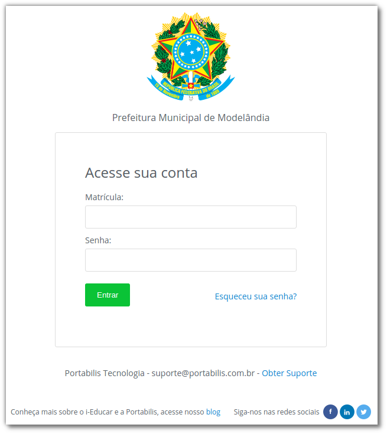
Tela inicial
Na página de entrada podem ser inseridas mensagens aos usuários, como novidades do sistema ou alertas de manutenção periódica. Existe também uma opção para recuperar a senha, que enviará um e-mail com instruções para recuperá-la.
Depois de efetuar o login, serão exibidos os módulos do sistema, que se subdividem da seguinte forma:
| Módulo | Descrição | Função |
|---|---|---|
 | Endereçamento | Neste módulo são cadastradas informações de endereços da instituição, tais como ruas, bairros, CEPs e outros. |
| 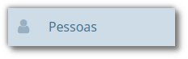 | Pessoas | Neste módulo são cadastradas as pessoas físicas e jurídicas, além dos tipos de religião, cor ou raça e deficiências, que serão utilizados em pessoas, alunos e/ou docentes. |
 | Escola | Neste módulo são cadastradas informações das escolas, alunos, matrículas e outros processos do sistema escolar. |
| 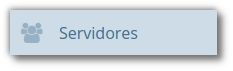 | Servidores | Neste módulo são cadastradas informações dos servidores, sejam docentes ou outros tipos de funcionários, além do quadro de horário das turmas. |
| 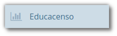 | Educasenso | Neste módulo você poderá exportar as informações do sistema, para migrá-las para o ambiente do Educacenso, ou importar o arquivo do Censo para população de novos dados. |
| 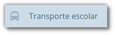 | Transporte Escolar | Neste módulo serão cadastradas informações do transporte público escolar, assim como outros processos que envolvem o mesmo. |
| 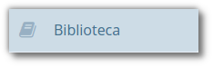 | Biblioteca | Neste módulo são cadastradas informações das bibliotecas, com registro de exemplares, empréstimos, devoluções e outros. |
| 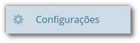 | Configurações | Neste módulo são cadastradas as permissões (tipos de usuários e cadastro de usuários vinculados), além das ferramentas de exportação de usuários, backups e auditoria. |
Você também poderá pesquisar por qualquer documento ou funcionalidade do sistema por meio do campo Busca rápida, localizada acima dos módulos descritos anteriormente. Para utilizá-la basta inserir a informação no campo e selecionar o resultado desejado.
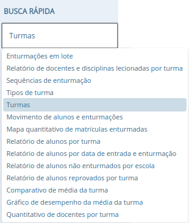
Comportamento das listas e botões
Quando um cadastro é aberto uma listagem de registros é exibida, e ao clicar em um destes registros é aberta uma nova página com opções específicas para este registro.
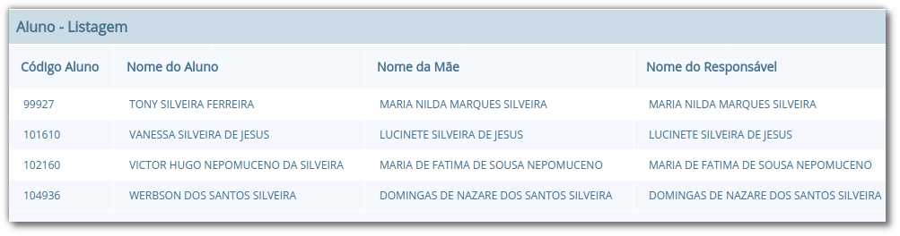
Quando uma página não comporta a listagem de todos os registros, os botões de navegação entre as várias páginas de registros são habilitados. A função de cada um destes botões é descrita a seguir:
| Componente | Descrição | Como funciona? |
|---|---|---|
| 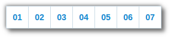 | Selecionar página de navegação | Este botão exibe atalhos para 7 (sete) páginas de listagem de registros mais próximas. Um clique em um número x do botão leva diretamente para a esta página x de registros. |
 | Avançar página | Este botão exibe a próxima página de listagem de registros. |
| 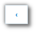 | Voltar página | Este botão exibe a página anterior de listagem de registros. |
| Última página | Este botão exibe a última página de listagem de registros. | |
| 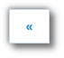 | Primeira página | Este botão exibe a primeira página de listagem de registros. |
As opções de um registro podem variar conforme o cadastro. Na Figura 5 são ilustrados os botões exibidos quando é realizado um clique em um item de registro da listagem de alunos. Os botões Novo, Editar e Voltar são comuns em todos os cadastros. No caso dos botões Nova matrícula, Atualizar histórico e Distribuição de uniforme são específicos do cadastro de Alunos.
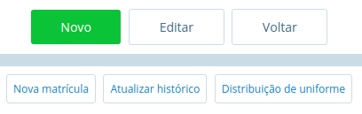
Ao pressionar o botão Novo, uma página para a inserção de um novo registro é aberta, e neste caso, surgem os botões Salvar, que ao ser pressionado, gravará os dados no banco de dados e o Cancelar, descartará os dados informados e retornará para a listagem de registros ilustrada na Figura 4.
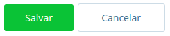
Ao pressionar o botão Editar, uma página similar à de inserção de novos registros é carregada para que seja possível alterar informações do cadastro. Ao pressionar o botão Salvar, as alterações realizadas são gravadas no banco de dados e o Cancelar, descarta qualquer alteração feita e retorna para a listagem de registros ilustrada na Figura 4.
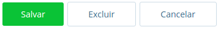
Nota: O botão Excluir permite que o registro seja excluído definitivamente do banco de dados. Para garantir a integridade do banco de dados, alguns cadastros não exibem este botão.
Além dos botões supracitados, outros componentes de página podem ser apresentados nos cadastros, tais quais são descritos a seguir:
| Componente | Descrição | Como funciona? |
|---|---|---|
| Adicionar | Adicionar itens em um cadastro. É exibido ao lado ou abaixo de uma lista de seleção e primeiro deve ser selecionado o item na lista, para posteriormente pressionar o botão. | |
| 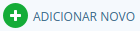 | Adicionar Novo | Adiciona novas linhas para a inclusão de novos itens em um cadastro. Diferentemente do anterior, os itens da lista são selecionados depois de se pressionar o botão. |
| Inserir/Editar | Inserir itens em um cadastro. Ex: ao cadastrar uma escola, se clicar neste botão ao lado do campo Rede Ensino, abrirá o cadastro de Rede de Ensino, e ao Salvar, transfere automaticamente o que foi cadastrado para o campo Rede Ensino. | |
| Excluir | Excluir itens em um cadastro. São exibidos ao lado de itens adicionados anteriormente. | |
 | Excluir | Mesmas funções do Excluir citado anteriormente, porém com um ícone diferente. |
| Buscar | Busca itens de um outro cadastro. Quando um campo possuir esta lupa ao lado, ao pressioná-la abrirá uma janela para pesquisar registros de outro cadastro. |
Filtros de busca e seleção
Quando os cadastros são abertos, na parte inferior da página são exibidos campos que podem ser usados para filtrar os registros da listagem.
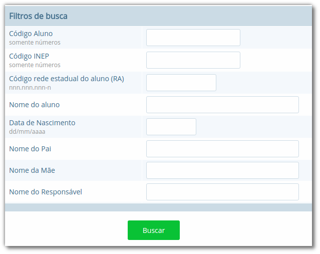
Com os filtros de busca é possível, por exemplo, buscar todos os alunos com uma data de nascimento específica. Para isto, basta informar a data no campo Data de Nascimento e pressionar o botão Buscar ou o botão Enter do seu teclado.
Um componente que os filtros de busca podem exibir é a busca rápida. Neste componente o usuário pode digitar o nome, ou outra referência que esteja descrita no campo, e o mesmo mostrará uma listagem que contém as informações que foram digitadas, como mostra a imagem abaixo:
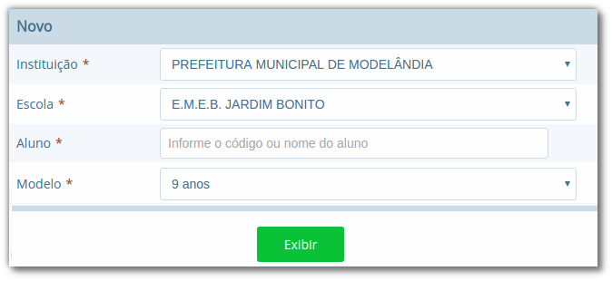
Filtros de seleção são utilizados normalmente para a emissão de relatórios ou exportações de arquivos. Na Figura 10, pode ser visualizado um exemplo de filtro de um documento de Atestado de Vaga. Os campos são alimentados com valores diferentes à medida que o usuário modifica a seleção, exemplo: ao selecionar uma Instituição, o campo Escola será alimentado com todas as escolas desta instituição; depois de selecionar a escola, no campo Curso serão listados todos os cursos disponíveis para esta escola, e assim sucessivamente. O botão Exibir serve para processar o relatório.
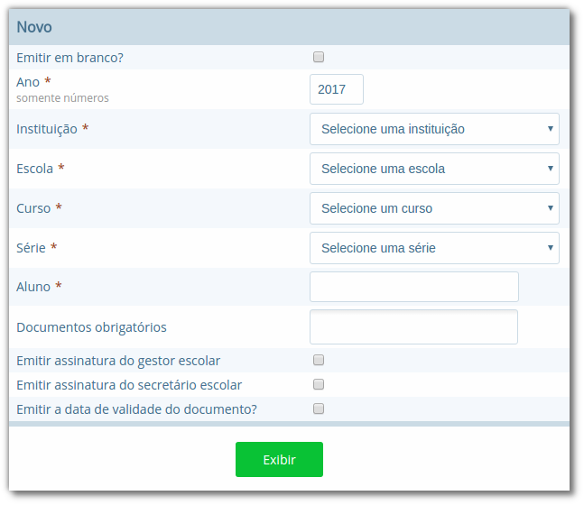
Filtros de seleção podem exibir ainda outro componente: a lupa. Neste caso, o usuário poderá buscar um respectivo dado cadastrado a partir de um clique na lupa, que faz com que a janela Pesquisa de valores seja aberta exibindo componentes de filtragem similares ao demonstrado na Figura 8.
Nota: O componente lupa é genérico, e poderá ser exibido em outras áreas do sistema como forma de auxílio ao preenchimento de campos de outros cadastros.